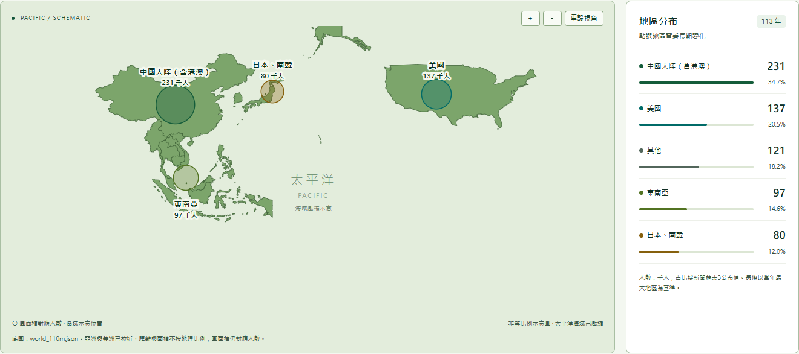
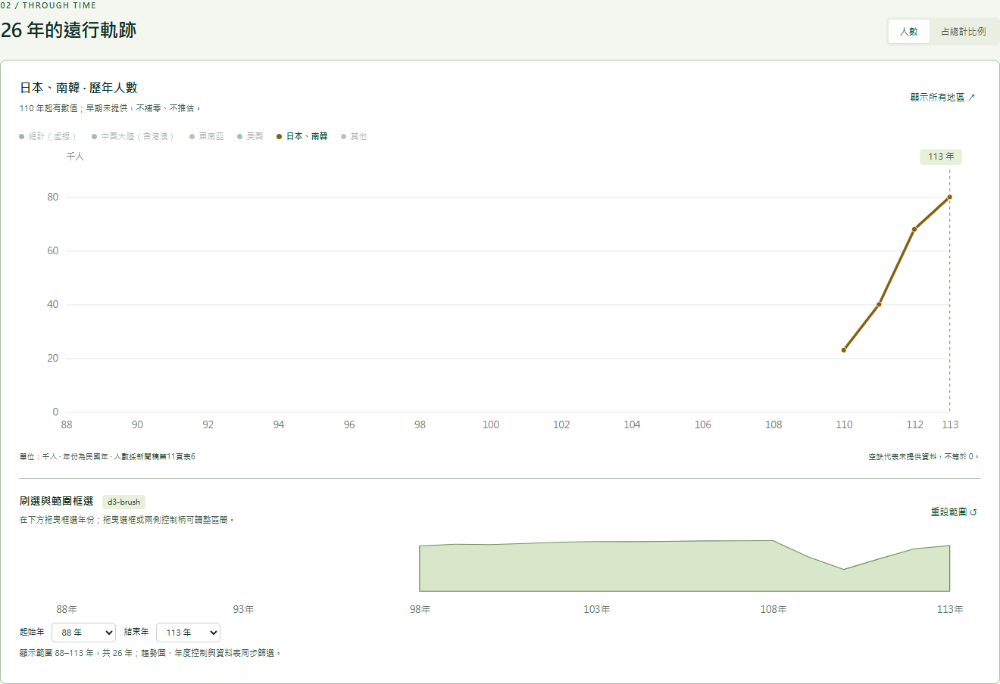
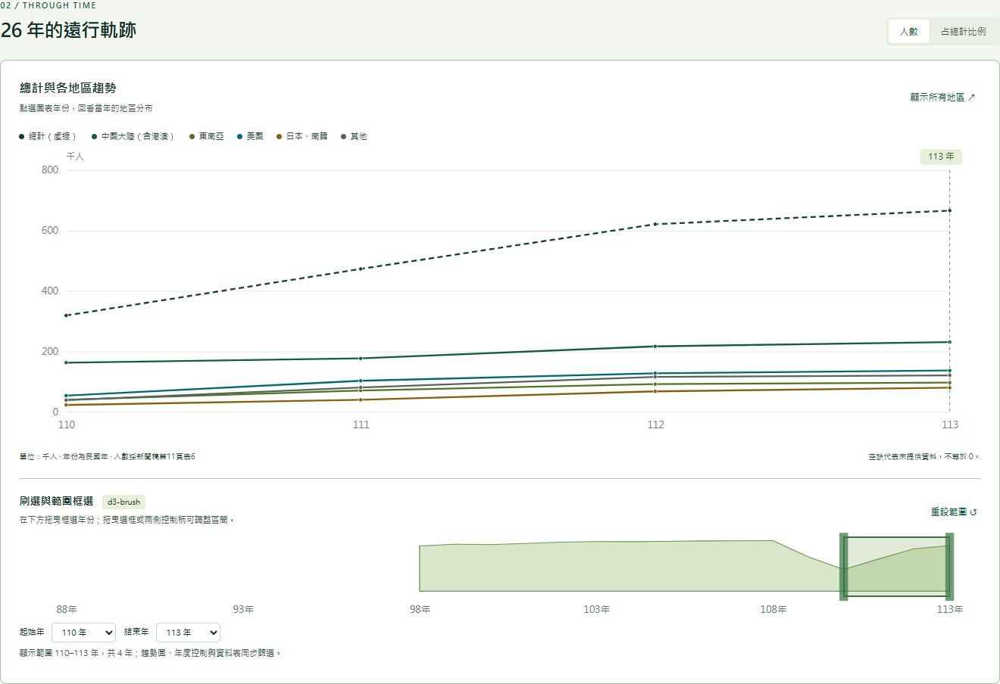

HW02 作業說明
課程名稱：資料分析與視覺化應用
學號姓名：413085108 張亦筠
GitHub Repository：https://github.com/bailey-barr/115VIS-HW2-413085108--（GitHub Pages）
作業網址：台灣人海外打工趨勢
影片網址：視覺互動展示影片
資料來源：行政院主計總處《113年國人赴海外工作人數統計新聞稿》，114年11月19日發布。
專案執行成果展示
1. 太平洋地圖與地區分布
以太平洋為中心的非等比例示意圖，呈現中國大陸（含港澳）、東南亞、美國、日本與南韓的人數分布。

2. 日本、南韓歷年趨勢
選取地區後連動歷年折線圖；日本與南韓依來源資料合併呈現。

3. 年份刷選與範圍框選
框選110至113年，趨勢圖、年度控制與資料表同步篩選。



開發環境與技術棧
以下列出本專案實際使用或驗證的版本；HTML、CSS與JavaScript為瀏覽器原生技術，不另安裝套件。
| 項目 | 版本／規格 | 用途與說明 |
|---|---|---|
| 專案 | 2.0.0 | package.json記錄的專案版本 |
| 開發環境 | Windows、PowerShell | 本機開發及啟動腳本 |
| Node.js | 24.22.1；專案要求18以上 | 使用內建HTTP模組啟動本機伺服器，無須npm install |
| HTML | HTML5 | 語意化頁面、控制項與影片播放器 |
| CSS | CSS3，含Grid／Flexbox | 高對比綠色版面與響應式配置 |
| JavaScript | ES2015+語法 | 狀態管理、資料載入與互動控制 |
| D3.js | 7.9.0 | 地圖、比例尺、折線圖、縮放與刷選；已附於vendor |
| d3-brush | 隨D3.js 7.9.0整合使用 | 以d3.brushX進行年份框選，未另行安裝獨立套件 |
| TopoJSON Client | 3.1.0 | 將world_110m.json轉為可繪製的地理形狀 |
| Python | 3.12.14 | 重新執行PDF資料抽取時使用，瀏覽網站不需要 |
| pypdf | 6.21.4 | 抽取新聞稿表格數據 |
| Microsoft Edge | 157.0.4341.42 | 本機瀏覽與互動驗證版本 |
| GitHub Pages | 靜態網站託管服務 | 從main分支根目錄發布；無專案可鎖定的服務版本 |
運用Ware的理論呈現供應鏈重組
本專案以「供應鏈重組下，海外工作布局由中國集中轉向其他地區」為分析主題，運用Colin Ware的認知與感知觀點，讓使用者透過視覺差異、趨勢辨識與互動操作理解資料。
新聞稿指出，中國大陸（含港澳）工作者占比受生產成本上升、臺商回流及供應鏈重組等因素影響，自100年的62.2%降至113年的34.7%。以疫情前108年比較113年，美國人數由92千人增加至137千人，占比由12.5%提高至20.5%，呈現海外工作人口配置的結構變化。
「勞工從中國轉往其他地區」在此指整體分布的轉變。資料沒有追蹤同一位工作者的跨國移動，因此不能據此認定原本在中國的勞工直接轉往其他國家；東南亞113年97千人也仍低於108年的120千人，不能將各地區一概解讀為持續成長。
| 認知與感知概念 | 本專案的應用 | 幫助讀者理解的問題 |
|---|---|---|
| 第一個概念：視覺顯著性與注意力 | 以高對比標示選取地區，其餘資訊淡化 | 「中國跟日本做比較」 |
| 第二個概念：圖樣辨識 | 用折線的位置、方向與轉折呈現年度變化 | 「中國的占比是否長期下降？」 |
| 第三層概念：視覺工作記憶 | 地圖、折線與排行使用一致配色，保留數值標籤 | 減少來回記憶地區名稱與數字的負擔 |
| 探索性操作 | 用d3.brushX框選年份並連動圖表 | 「目前是否為較長期的結構變化？」 |
表中的概念順序是本作業的應用整理。依原始資料分類，「中國跟日本做比較」實際操作為比較「中國大陸（含港澳）」與「日本、南韓」合併組，無法單獨析出日本。可依序選取地區查看趨勢，再切回全部地區並切換占比模式比較。
刷選100–108年可觀察疫情前的長期趨勢；108–110年可觀察疫情及其他因素交織的衝擊；110–113年則可觀察復甦，再與108年基準比較。這種操作將「是否發生結構變化」轉換為可在圖表上檢查的視覺問題。
理論參考：Colin Ware, Visual Thinking Algorithms。其中的視覺查詢、圖樣辨識、視覺工作記憶與探索性操作，是本專案設計的參考。
本機執行
Windows雙擊「啟動網站.cmd」，保持視窗開啟，再瀏覽 http://127.0.0.1:4173 。結束時按Ctrl+C。
也可在專案目錄執行：
node server.mjs不需npm install，D3與TopoJSON已附於vendor。勿直接雙擊index.html。若4173已占用，在PowerShell先執行 $env:PORT = '4174' 再啟動，並改瀏覽4174連接埠。